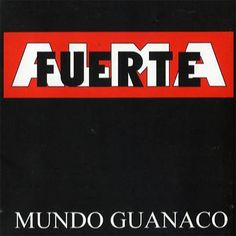
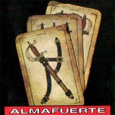

Mundo Guanaco (1995)
Del Entorno (1996)
En Vida (1997)
Peso Argento (1997)

Almafuerte (1998)
A Fondo Blanco (1999)
Piedra Libre (2001)
Ultimando (2003)
1995 & 2005 10 Años (2005) - En Vivo
Toro y Pampa (2006)
Ayer Deseo Hoy Realidad (2008)
En Vivo Obras (2010)
Trillando La Fina (2012)
En vivo Microestadio Malvinas (2012)
Tangos y Milongas, Vol.1 (2014)
Atesorando Los Cielos (2015)
En Vivo All Boys (2022)
Avivando La LLama De La Ley Natural (2022)